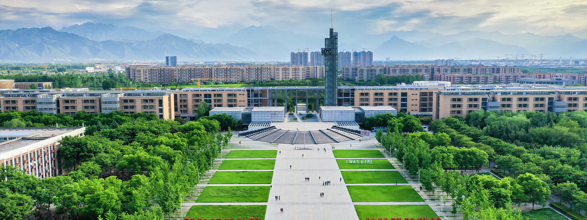
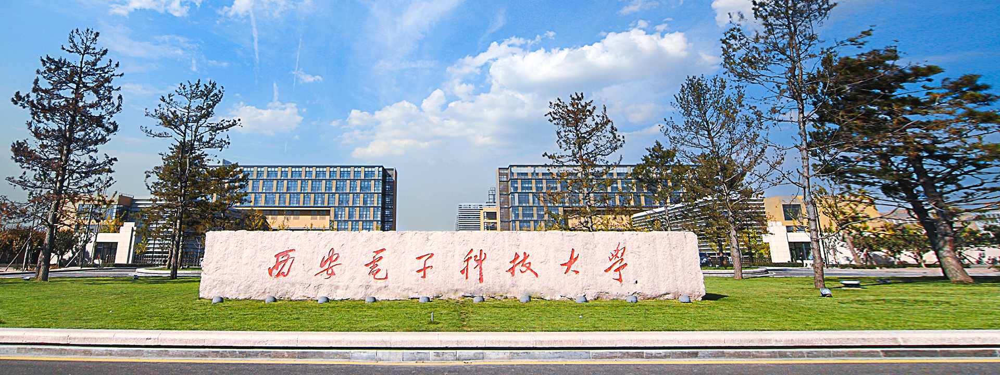
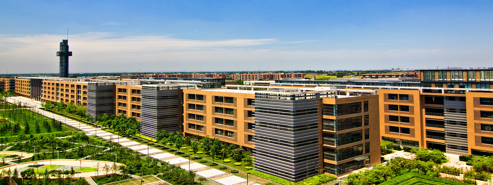
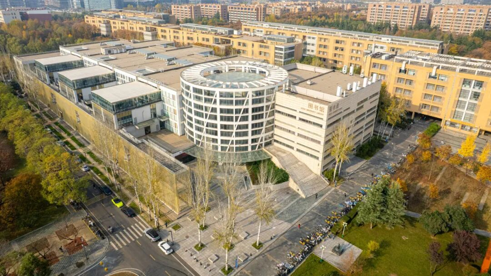

让每一次探索，都有真实的回声。
从课堂到实验室，从校园到社会，西电人的问题意识一直在生长。
一所从信息与电子学科出发的大学，把好奇心带进课堂、实验室与真实世界。


从红色电波到智能世界，西电始终在回答同一个问题：知识如何真正改变生活。
这里有面向国家战略的科研，也有从一张草图开始的第一次实验。每一门课、每一间实验室、每一次协作，都是把“知道”推进到“做到”的练习。
认识西电↗
长安校区 · 教学区与校园绿地校园不是背景，它是每天发生的实验。走过图书馆、操场和实验楼，新的想法总会在路上相遇。

信息与通信、电子科学、计算机、人工智能与空间科学，在同一张校园地图上彼此回应。